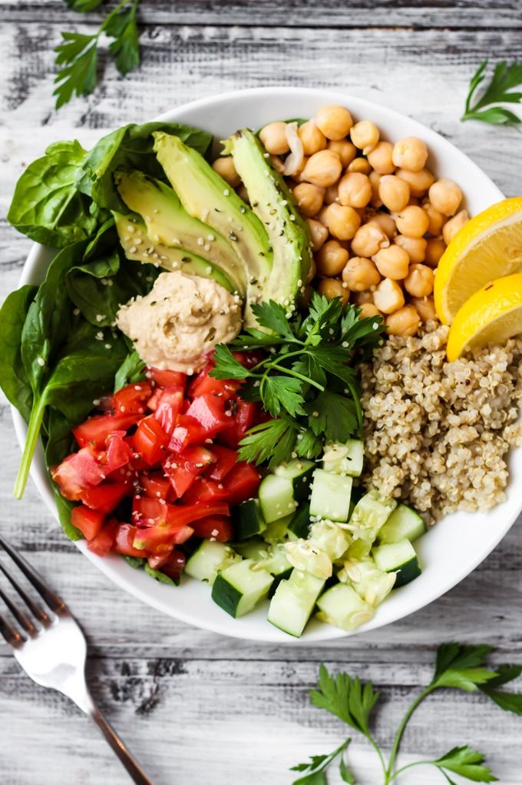

🌈 Healthy & Vibrant
Rainbow Quinoa Bowl
Protein-packed quinoa served with a colorful medley of crisp
veggies and a tangy lemon-tahini dressing.
Wholesome, nourishing, and full of flavor!
Ingredients
- 3/4 cup quinoa, rinsed
- 1 1/2 cups water or vegetable broth
- 1/2 cup cherry tomatoes, halved
- 1/2 cup shredded red cabbage
- 1/2 yellow bell pepper, diced
- 1/2 cup shredded carrot
- 1/2 cup cucumber, diced
- 1/4 cup corn kernels (fresh or thawed frozen)
- 1/4 cup chopped fresh parsley
-
For the dressing:
- 2 tbsp tahini
- 2 tbsp lemon juice
- 1 tbsp olive oil
- 1 tsp maple syrup or honey
- 1 small garlic clove, minced
- Salt & pepper, to taste
- 2–3 tbsp water (to thin)
-
Optional toppings:
- Avocado slices
- Toasted seeds or nuts
- Feta cheese crumbles
Instructions
- In a saucepan, combine quinoa and water/broth. Bring to a boil, reduce heat, cover, and simmer for 12–15 minutes until fluffy. Let cool slightly.
- In a small bowl, whisk together tahini, lemon juice, olive oil, maple syrup (or honey), garlic, salt, pepper, and water to make a creamy dressing.
- Arrange cooled quinoa in bowls. Top with tomatoes, cabbage, bell pepper, carrots, cucumber, corn, and parsley.
- Drizzle with lemon-tahini dressing. Add avocado, seeds, or feta if desired.
- Serve immediately and enjoy your vibrant, nourishing bowl!